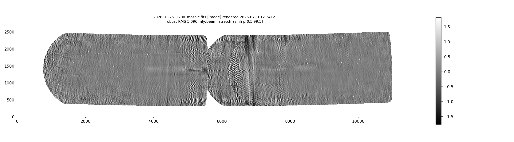
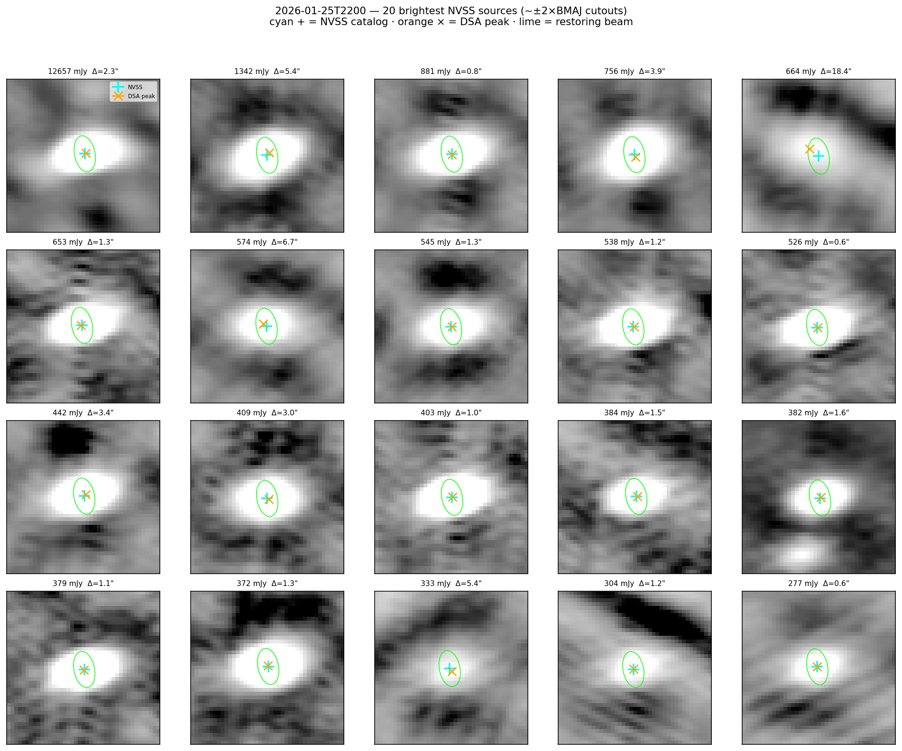
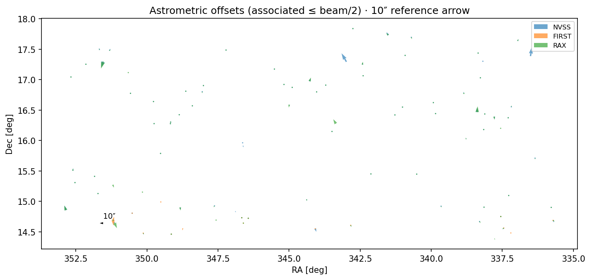

DSA-110 Continuum Imaging
Where the pipeline stands · July 2026
Status for science collaborators2026-01-25T2200
Science goal
Detect variable / transient compact radio sources (including ESEs)
Daily-cadenced forced photometry on hourly-epoch mosaics
Light curves + Mooley variability metrics (η / Vs / m)
Not a single deep all-sky map — a time-domain survey on a Dec strip
What “done” means
Array dwells on a fixed Dec strip ; sky drifts through the beam
~5-minute tiles → coadd into ~1-hour hourly-epoch mosaics
Adjacent epochs overlap so flux stays continuous across boundaries
Per-source forced photometry → variability / ESE search
Not a 24-hour “daily mosaic”
Instrument snapshot
DSA-110 at OVRO — meridian drift-scan transit array~96 active antennas of 117 elements in the HDF5 metadata
L-band 1.31–1.50 GHz · 16 subbands · 187.5 MHz total
Integration ~12.9 s · ~24 samples per ~5-min tile
Current production Dec strip ~16.1°
Data flow
flowchart LR
H[HDF5] --> MS[MS]
MS --> C[Calibrate]
C --> T[Tile image]
T --> M[Hourly-epoch mosaic]
M --> QA[Epoch QA]
QA --> P[Forced photometry]
P --> LC[Light curves / ESE]
Strict QA can stop the chain before photometry
Calibration status
Bandpass + gain tables (.b / .g) before imaging
Acquisition order: same-date → primary calibrator → bright-source fallback → borrow nearest validated
Fail loud — no silent unknown provenanceBorrowing requires Dec-strip compatibility via provenance sidecar
Pre-applycal RFI flagging recently wired into day/batch paths
Tile imaging status
WSClean · 4800×4800 px · cell ~3″ (tile); mosaic products often 6″ pixels
Phaseshift → applycal → image; FIELD phase/reference dirs synced
EveryBeam needs TELESCOPE_NAME = DSA_110 after SPW merge
Reference check: 3C454.3 recovers ~12.5 Jy/beam on test data
These invariants are silent-failure modes if skipped
Mosaicking status
Production: batch UTC-hour bins with ±2 tile overlap (~20 min)
Quicklook image-domain coadd (PB-weighted; beam-map blanking)
~12 tiles per hourly-epoch mosaic along the Dec strip
Science/Deep visibility-domain joint imaging exists but is not the default product
Sliding-window mosaics are the streaming design target
Reference product — 2026-01-25T2200
Hourly-epoch mosaic · Dec strip ~16.2° · used for all validation below
Image quality — RFI rebuild
Pre-applycal RFI flagging cut noise substantially on this epoch
Global robust RMS: 8.92 → 5.10 mJy/beam (~−43%)
Bright-source peak flux essentially preserved (~16.2 Jy)
Residual crosshatch / PSF-lattice texture remains
Central coverage pinch (missing tile) still present
Amplitude improved; failure topology of some image-QA metrics unchanged
RFI-cleaned mosaic
Same epoch after RFI rebuild — quieter, but lattice + coverage pinch remain

Epoch QA — three gates
Flux scale — bright anchors vs expectedCatalog completeness — fraction of expected sources recoveredNoise floor — mosaic RMS / effective noiseAll three must pass for epoch PASS
Strict QA (default): QA-FAIL epochs skip forced photometry and do not archive as science-clean
QA on the reference epoch
Gate Result Notes
Flux scale PASS Bright anchors OK Noise floor PASS After RFI rebuild Completeness FAIL 172/383 ≈ 45% (need ≥60%)
Overall epoch QA: FAIL → photometry gated off
Coverage-corrected investigation ≈ 71% — not yet the production gate
Astrometry — PASS
Survey N Median Δ RMS Δ Verdict
NVSS 176 1.56″ 4.69″ PASS FIRST 16 2.22″ 2.98″ PASS RACS 215 1.86″ 4.58″ PASS
Gate: seeded RMS ≤ √(BMAJ×BMIN)/5 ≈ 8.82″
Beam on this mosaic: 58.8″ × 33.1″
Independent agreement across three surveys
Astrometry evidence — NVSS cutouts
20 brightest NVSS · cyan + = catalog · orange × = DSA peak · lime = beam

Astrometry evidence — offsets on sky
ΔRA vs ΔDec
Quiver (10″ ref.)

No strong radius-dependent failure once the quiver is scaled correctly
Photometry & variability
Condon matched-filter forced photometry is implemented
Mooley η / Vs / m and multi-epoch pairing exist in-package
ESE candidate scoring paths exist
Not run on this reference epoch under strict QA
Machinery is ahead of unblocked science products
Catalog caveat
Forced-phot “master” catalog build claims NVSS/FIRST/RAX/VLASS inputs
In practice, master rows are 100% VLASS today
Astrometry validation therefore queried survey DBs directly
Master rebuild is required before trusted multi-survey forced photometry
This is a known Phase-2 follow-up from the astrometry design
Solid vs not yet
Solid
HDF5 → MS → cal → tile path
Hourly-epoch Quicklook mosaics
Astrometry on reference epoch
RFI amplitude improvement
Strict QA gating discipline
Not yet
Completeness gate (production)
Forced phot on this epoch
Trusted multi-survey master catalog
Science/Deep as default product
ESE results as science deliverable
Near-term plan
Fix / adopt coverage-aware completeness in epoch QA
Unblock forced photometry on QA-PASS epochs
Rebuild master catalog with real NVSS/FIRST/RAX flags
Promote astrometry check into routine mosaic QA
Later: science/deep coadds; streaming sliding-window mosaics
Takeaway
Imaging and astrometry look credible on the reference epoch.not ready yet until
completeness / photometry clear.
Spec: docs/superpowers/specs/2026-07-11-pipeline-status-slide-deck-design.md
← Prev
Next →